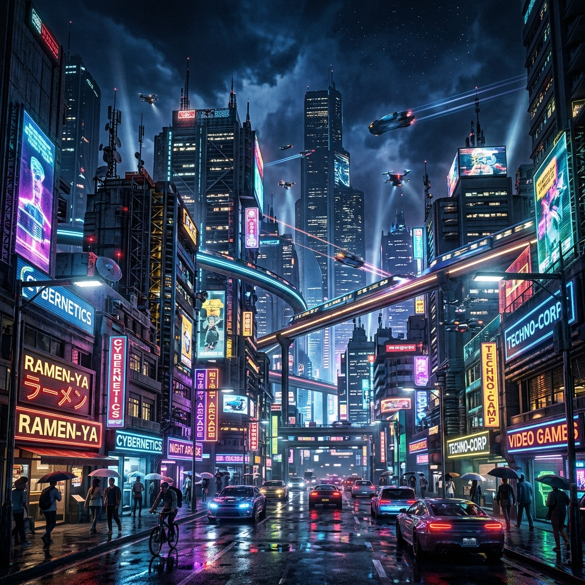

⚙️ Display & Performance Configurator
DkZ™ MOD-092
🎬 Multimedia / 4K HDR
🤖 AI Workspace
🎮 CS2 Pro Gaming
3840×2160
Auflösung
HDR10+
HDR Standard
45 Mbps
Bitrate
10-bit
Farbtiefe
🔍
Before / After — Grafik-Boost Vergleich
Ziehe den roten Slider nach links/rechts um den HDR Detail-Effekt zu vergleichen

◄►
OHNE HDR
4K HDR ✦
🎛️
Streaming-Qualität
4K HDR Ultra
3840×2160 · HDR10+ · 10-bit · 45 Mbps — Maximale Grass-Details, volumetrische Effekte
4K
HDR
4K SDR
3840×2160 · SDR · 8-bit · 25 Mbps — Hohe Auflösung ohne HDR
4K
1440p Balanced
2560×1440 · SDR · 8-bit · 15 Mbps — Gute Qualität bei weniger Bandbreite
Balanced
1080p Performance
1920×1080 · SDR · 8-bit · 8 Mbps — Stabil bei langsamer Verbindung
Performance
✨
Enhancement-Optionen
Grafik-Boost
KI-basierte Detail-Verstärkung für Texturen und Vegetation
HDR Tone Mapping
Dynamische Helligkeitsanpassung für bessere Kontraste
Super Resolution (DLSS/FSR)
KI-Upscaling für native 4K-Qualität bei geringerer Last
Film Grain
Kinematischer Filmkorn-Effekt für cineastischen Look
Schärfe-Boost
65%
Sättigung
55%
Active
Workspace
4
KI-Modelle
16 GB
VRAM Alloc
72ms
Latenz
🧠
KI-Engine Konfiguration
GPU-Beschleunigung
CUDA/ROCm für lokale Inferenz aktivieren
Auto-Context Loading
Relevante Artefakte automatisch in Kontext laden (James™ Pipeline)
Streaming Response
Token-by-Token Streaming statt blockiertem Output
Low-Power Modus
Reduziert VRAM und CPU-Last — langsamer, aber cooler
Max Token Output
8192
Temperature
0.7
🔌
Provider Presets
Gemini 3.1 Pro
Google DeepMind — 1M Context, Code + Reasoning
Primary
Claude Opus 4
Anthropic — Deep Thinking, lange Aufgaben
Secondary
Ollama Local
Llama 3.3 70B — Lokal, keine Cloud-Kosten
Local
Groq Ultra
Ultra-schnelle Inferenz — 800 tok/s
Speed
400+
Target FPS
128 tick
Server Rate
100%
Render Scale
5ms
Input Lag
🏆
Pro Player Presets — CS2 Majors
🎯 Pro FPS (Tournament)
1280×960 Stretched · Low Textures · Max FPS · Kein VSync — Standard der Pro-Szene
400+ FPS
🎨 Pro Visual
1920×1080 · Medium Textures · Post-Processing AN — Streams und Content Creation
1080p
✨ 4K Showcase
3840×2160 · Ultra · Ray Tracing · Alles auf Max — Für Screenshots und Highlights
4K
RTX
💻 Laptop Modus
1280×720 · Low Everything · Max Battery — Turnier unterwegs
Eco
⚡
Performance-Tuning
Grafik-Boost
KI-Upscaling für bessere Texturqualität ohne FPS-Verlust
Anti-Aliasing (MSAA)
Kantenglättung — kostet FPS, sieht besser aus
VSync OFF
Deaktiviert vertikale Synchronisation für minimales Input-Lag
NVIDIA Reflex
Reduziert System-Latenz um bis zu 30%
Ragdoll Physics
Spieler-Physik deaktivieren für cleanes Gameplay
Render Scale
100%
Max FPS Cap
400
🖱️
Pro Crosshair & Input
Raw Input
Direkte Mauseingabe ohne Windows-Beschleunigung
Custom Crosshair
Pro Player Fadenkreuz: Grün, Dünn, Kein Dot
Maus-Sensitivität
1.8
Zoom-Sensitivität
0.9